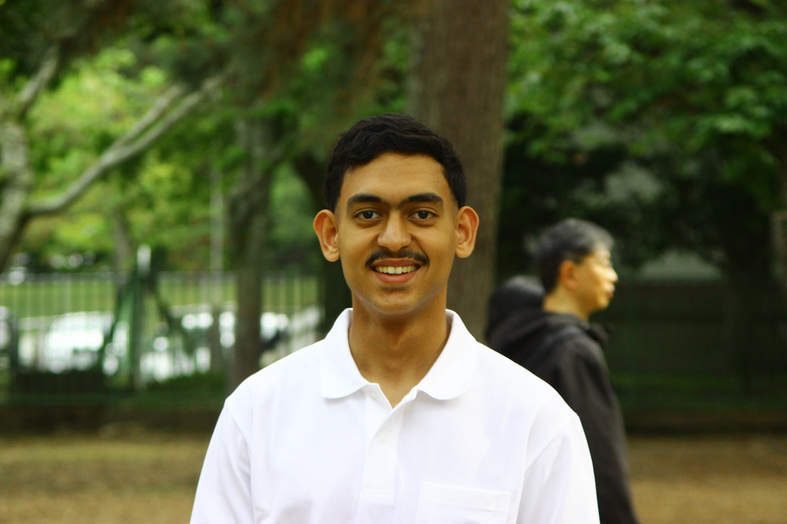

2024 – 2027
Diplôme d'Ingénieur (Master degree) — Cybersecurity & AI
ENSICAEN, Caen, France
Core curriculum: machine learning, adversarial attacks, network security, parallel computing, cryptography, software engineering.
Cybersecurity & AI · ENSICAEN · NAIST
I am a second-year engineering student at ENSICAEN (École Nationale Supérieure d'Ingénieurs de Caen), specialising in Cybersecurity and Artificial Intelligence. I am currently on a four-month research internship at NAIST (Nara Institute of Science and Technology) in Japan, where I work on machine learning and deep learning methods for vulnerability detection in C/C++ code.
My research interests sit at the intersection of software security, static analysis, and deep learning for code. Outside of research I am drawn to sports analytics and data science applied to football.

Core curriculum: machine learning, adversarial attacks, network security, parallel computing, cryptography, software engineering.
Intensive preparatory courses in mathematics, physics, and computer science.
Research internship focused on applying machine learning and deep learning techniques to the problem of vulnerability detection in C and C++ source code.
Research project on applying machine learning and deep learning techniques to the problem of vulnerability detection in C and C++ source code. Implemented a classical ML approach for experimentation, and a deep learning model on a dataset of real-world vulnerabilities. Compared with LLM models.
→ GitHubData-driven football scouting dashboard built on FBref statistics. PCA dimensionality reduction + K-Means clustering to identify player archetypes; Random Forest classifier for role prediction. Deployed with Streamlit.
→ GitHubA interactive web application for sport clubs to make their fans discover their facilities, services and history, with an escape game. Developed as a team project for a software engineering course. Built with Flutter. Implement a real-time game events system, a admin website to manage the application, and a dynamic quiz system for the escape game.
→ GitLabDesktop application implementing MVC + Observer patterns with FR/EN internationalisation. Includes constraint-propagation solver and step-by-step hint mode.
→ GitHubHands-on exploration of evasion attacks (FGSM, PGD, C&W) and defences (randomised smoothing, DP-SGD) on image classifiers, with ablation study on certified robustness under l∞ perturbation budgets.